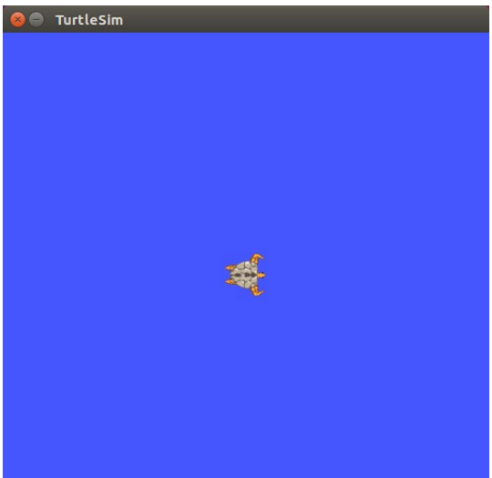
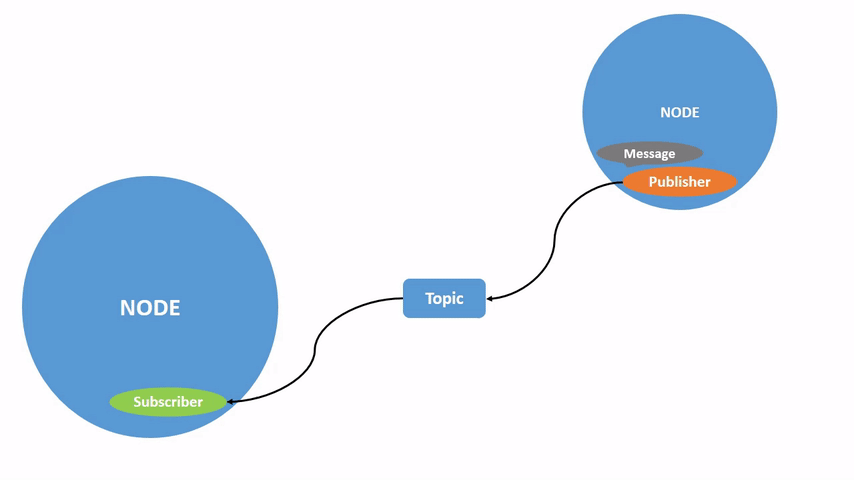
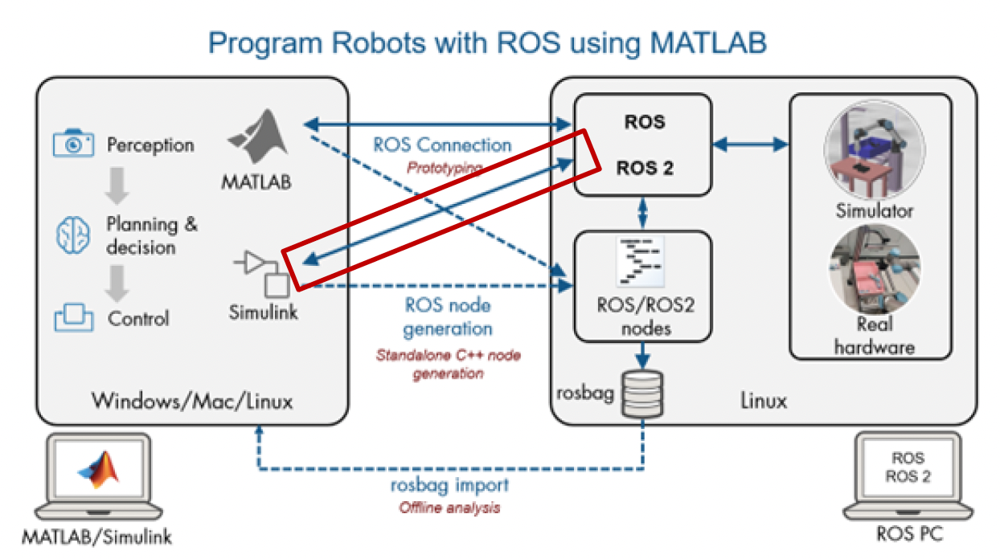

ROS 2実習
turtlesim で ROS 2 の通信を確認し、Python で Subscriber / Publisher を作成します。コマンド欄はそのままコピーできます。
目的と内容
ROSの操作と簡単なPythonプログラム作成に触れてもらい、ROSの概要を学んでもらいます。
題材として、turtlesim という既存のコマンドでカメが動き回るプログラムを用いて、まずはコマンド操作からカメの操作を行います。
この後、Python による Subscriber / Publisher のプログラム作成までを体験します。
実習使用環境
- 使用PC： Raspberry Pi 5 8GB
- Broadcom BCM2712、2.4 GHz quad-core 64 bit Arm Cortex-A76 CPU（512KB L2キャッシュ/2MB 共有L3キャッシュ）
- VideoCore VII GPU、supporting OpenGL ES 3.1、Vulkan 1.2
- 8 GB LPDDR4X-4267 SDRAM
- 使用OS：Ubuntu 24.04LTS（Desktop）
- Raspberry Pi ImagerでSDカードに書き込んでインストール
- https://www.raspberrypi.com/software/
- 使用エディタ：VS code
- https://code.visualstudio.com/docs/setup/linux
- 使用言語：Python（ Ubuntu 24.04に標準でインストール済み）
ROS 2のバージョン
- 開発世代ごとのバージョンあり
- OS環境や周辺ツールの対応状況や、使用したいROSパッケージの対応状況などから選択する必要あり
- 今回は、ROS 2 Jazzy Jaliscoをインストール済み
- ROS 2 Jazzyのinstall（https://docs.ros.org/en/jazzy/Installation/Ubuntu-Install-Debs.html）
| ROS 2 Lyrical Luth | ROS 2 Jazzy Jalisco | ROS 2 Humble Hawksbill |
|---|---|---|
| Ubuntu Linux 26.04, Windows 11 Latest ROS 2 long-term release |
Ubuntu Linux 24.04, Windows 10 Active ROS 2 long-term release |
Ubuntu Linux 22.04, Windows 10 Best upgrade path for ROS 1 users |
| — | MATLAB R2025a ～ R2026a | MATLAB R2023b ～ R2024b |
ROS 2関連パッケージの追加インストール（済み）
これらは、すでに実行済です。参考までに記載しておくだけです。turtlesim のインストール
今回実習の題材とするTurtlesimのインストール方法Terminal
sudo apt install ros-jazzy-turtlesimRQT のインストール
ROS 2の可視化を行うGUIツール"RQT"のインストール方法Terminal
sudo apt install 'ros-jazzy-rqt*'ROS 2 環境の読み込み設定
ROS 2のコマンドやパッケージをターミナルから使用するには、ROS 2の環境設定を読み込む必要があります。毎回手動で読み込まなくてもよいように、初期設定ファイル .bashrc に設定を追加します。Terminal
echo "source /opt/ros/jazzy/setup.bash" >> ~/.bashrcPython 開発環境
Pythonを使ってROS 2のプログラムを開発するためのツールのインストールTerminal
sudo apt install python3-colcon-common-extensions python3-rosdep python3-vcstool git -yrosdep 初期化と更新
ROS 2開発ツールのrosdepの初期化。rosdepとは、ROS 2 において、パッケージが動作するために必要な外部ライブラリや他のパッケージ（依存関係）を自動で探してインストールするコマンドラインツールです。Terminal
sudo rosdep initTerminal
rosdep update実習内容
- Turtlesimとは、右図のように、windowの中にカメが出てきて、コマンドを入力すると、前後進・左右旋回を行うというものです。Window枠端にあたると衝突して止まります。
- 実習は以下の２項目をやってもらいます
- 実習１：TurtlesimをROS 2コマンドから動かす
- 実習２：Pythonでコード作成して動かす。コード作成は以下の３つ
- カメの位置を読み取る
- カメに指令を入れて旋回させる
- カメがウィンドウ内で壁に当たらず動き回るようにする

実習１：起動からNode確認
turtlesim を起動
新しくターミナルを開き、turtlesimを起動しますTerminal
ros2 run turtlesim turtlesim_nodeNode を確認
turtlesimのnodeができていることを確認します。別のターミナルを開いて、次を実行Terminal
ros2 node listキーボード操作 Node を起動
キーボードでカメを動かすNodeを起動します。ターミナルで次を実行Terminal
ros2 run turtlesim turtle_teleop_keyNode を再確認
新しく、別のターミナルを開いて、Nodeを確認します。起動したNodeがあることを確認しましょう。Terminal
ros2 node list実習１：Topicの確認
Topic 一覧
現在、動作しているTopicの一覧を確認しますTerminal
ros2 topic listMessage type を確認
/turtle1/poseを例として、このTopicのtypeを確認しますTerminal
ros2 topic type /turtle1/poseMessage を表示
Topicに流れている、Messageの内容を見てみる。画面が止まって見えるかもしれませんが、連続してMessageの内容が出力されています。teleop_keyを起動しているターミナルで、矢印キー（カーソルキー）でカメを動かして、Messageの内容が変わることを確認する。
出力停止はctrl-cキーを押す。
Terminal
ros2 topic echo /turtle1/posepose の通信状態
Topicの通信状態（PublisherとSubscriberの数）を確認する.Terminal
ros2 topic info /turtle1/posecmd_vel の通信状態
cmd_velの通信状態を見てみるTerminal
ros2 topic info /turtle1/cmd_vel実習１：ServiceとActionの確認
Topic以外も見てみる
"Service"の状態Terminal
ros2 service listTerminal
ros2 action listROSにはTopic, Service, Actionの３つの通信がある
実習１：rqtでグラフィカル表示
rqt でグラフィカルにROSの状態を見てみる
新しくターミナルを開いて、"rqt"とコマンドを打つTerminal
rqtTopicとは何か
- PublisherからSubscriberにTopicを通して、Messageを送る
- 「１対１」、「１対多」、「多対多」

Serviceとは何か
- Client側からServer側にRequestを送って、その結果をResponseとして受け取る
- 「１対１」や「多対１」

Actionとは何か
- ServiceとTopicを組み合わせて、時間がかかる処理に使う
- Goal ServiceでClient が「やること」を依頼し、受付けたことをServer返信
- FeedbackTopicで状況を連絡
- Result Serviceで「結果の返信」をClient依頼し、終了したら「結果」をServerが返信

実習１：Serviceを動かす
Serviceについて、試してみる
サービスのTypeを調べてみるTerminal
ros2 service type /turtle1/set_penTerminal
ros2 interface show turtlesim/srv/SetPenTerminal
ros2 service call /turtle1/set_pen turtlesim/srv/SetPen \
"{r: 255, g: 0, b: 0, width: 5, 'off': 0}"実習１：Actionを動かす
Actionを試してみる
Actionの型を調べてみるTerminal
ros2 action list -tTerminal
ros2 interface show turtlesim/action/RotateAbsoluteTerminal
ros2 action send_goal /turtle1/rotate_absolute \
turtlesim/action/RotateAbsolute \
"{theta: 1.57}" \
--feedback実習２：実習内容
- SubscriberとPublisherに関して、Pythonでコード作成
- 作成するのは以下の３つのプログラム
- Subscriberのサンプル：pose_subscriber.py
- カメの位置と姿勢を出力する
- Publisherのサンプル：velocity_publisher.py
- カメを旋回させる
- 組み合わせのサンプル：wall_avoidance.py
- カメが壁に近づくと旋回して、壁に当たらないように走り続けるようにする
- ３つのプログラムを“パッケージ”としてまとめる
Packageとは、
- パッケージ（Package）とは、ROS 2で関連するプログラムや設定ファイルなどをひとまとめにして管理する単位です。
- turtlesimもパッケージ
"ros2 run turtlesim turtlesim_node"のコマンドは、"turtlesim"パッケージの中の、"turtlesim_node"プログラムを実行する、という意味。 - 研修２では、turtle_controllerパッケージとして、プログラムをまとめます
今回のパッケージ構成
turtle_controller
├─ pose_subscriber.py
├─ velocity_publisher.py
└─ wall_avoidance.py
”turtlesim"パッケージを調べてみる
Packageに含まれるプログラムを調べるにはTerminal
ros2 pkg executables turtlesimPackageの作成（実習２では雛型作成済み）
パッケージ作成から実行までの手順
- (1) Package雛型作成：ros2 pkg create --build-type ament_python turtle_controller
- (2)Pythonプログラムを作成
- (3)プログラム登録：雛型の中にあるsetup.pyにプログラムを記載
- (4) パッケージをビルド：colcon build
- (5)ビルドしたパッケージをROS 2から実行できるようにする：source install/setup.bash
- (6)プログラム実行：ros2 run turtle_controller pose_subscriber
例：Package 雛型作成（作成済）
Terminal
ros2 pkg create --build-type ament_python turtle_controller例：ビルド
Terminal
colcon build例：現在のターミナルで有効化
Terminal
source install/setup.bash例：実行
Terminal
ros2 run turtle_controller pose_subscriberスライド内の補足コマンド
実際には、依存関係などを明示してパッケージ作成Terminal
ros2 pkg create turtle_controller --build-type ament_python --dependencies rclpy geometry_msgs turtlesim実習２：pose_subscriber.pyを開く
実習２：pose_subscriber.pyの解説と小課題
解説
- プログラムの動作
- ① main()が呼ばれ、ROS 2を初期化する
Python
def main(args=None):
rclpy.init(args=args)- ② PoseSubscriber()を呼び出して、ROS 2ノードを作る
Python
node = PoseSubscriber()- PoseSubscriber()の中では、最初に__init__()が呼ばれる
- ROS 2ノードとして初期化する
Python
def __init__(self):
super().__init__('pose_subscriber')- /turtle1/poseを受信するSubscriberを作る
Python
self.subscription = self.create_subscription(
Pose,
'/turtle1/pose',
self.pose_callback,
10
)- Messageを受信したときに実行する処理を、pose_callback()として定義しておく
Python
def pose_callback(self, msg):- ③ __init__()が終わるとmain()に戻り、spin()でMessageの受信を待つ
Python
rclpy.spin(node)- ④ /turtle1/poseにMessageが届くと、ROS 2がpose_callback()を呼び出す
- ⑤ pose_callback()で、受信したPose Messageの内容を処理する
pose_callback()に追加する Python コード
以下の内容を書き込むと、実行時にカメの位置（x, y）と向き（theta）がターミナルに出力されます。
Python
self.get_logger().info(
f'x = {msg.x:.2f}, '
f'y = {msg.y:.2f}, '
f'theta = {msg.theta:.2f}'
) VS CodeでCtrl+Sを押して、保存
実習２：pose_subscriber.pyの実行
ビルド
ターミナルに戻って、buildするTerminal
colcon buildターミナルのパッケージ有効化
エラーが出なかったら、ビルドしたパッケージを現在のターミナルから使用できるようにするTerminal
source ./install/setup.bashSubscriber を実行
Terminal
ros2 run turtle_controller pose_subscriber停止は表示が流れ続けているターミナルをクリックして、ctrl-Cを入力
実習２：velocity_publisher.pyを開く
- VS codeの左側のEXPLORERウィンドウからsrc/turtle_controller/velocity_publisher.pyをダブルクリックして開く
実習２：velocity_publisher.pyの解説と小課題
解説
- プログラムの動作
- ① main()が呼ばれ、ROS 2を初期化する
Python
def main(args=None):
rclpy.init(args=args)- ② VelocityPublisher()を呼び出して、ROS 2ノードを作る
Python
node = VelocityPublisher()- VelocityPublisher()の中では、最初に__init__()が呼ばれる
- ROS 2ノードとして初期化する
Python
def __init__(self):
super().__init__('velocity_publisher')- /turtle1/cmd_velへMessageを送信するPublisherを作る
Python
self.publisher = self.create_publisher(
Twist,
'/turtle1/cmd_vel',
10
)- 一定時間ごとにtimer_callback()を呼び出すTimerを作る
Python
self.timer = self.create_timer(
0.5,
self.timer_callback
)- ③ __init__()が終わるとmain()に戻り、spin()でノードを動作させ続ける
Python
rclpy.spin(node)- ④ Timerの時間になると、ROS 2がtimer_callback()を呼び出す
Python
def timer_callback(self):- ⑤ timer_callback()の中でTwist Messageを作る
Python
msg = Twist()- ⑥ Messageに前進速度と旋回角速度を設定する
- ⑦ Twist Messageを/turtle1/cmd_velへ送信する
Python
self.publisher.publish(msg)- ⑧ その後もspin()しているため、Timerによって④〜⑦が繰り返される
小課題
⑥のtimer_callback()のMessage設定処理として、次のPythonコードを入力「# 前進速度」の下に、
Python
msg.linear.x = 2.0
Python
msg.angular.z = 1.0VS CodeでCtrl+Sを押して、保存
実習２：velocity_publisher.pyの実行
ビルド
ターミナルに戻って、buildするTerminal
colcon build現在のターミナルで有効化
エラーが出なかったら、ビルドしたパッケージを現在のターミナルから使用できるようにするTerminal
source ./install/setup.bashPublisher を実行
作成したプログラムをターミナルで実行し、カメが旋回するのを確認するTerminal
ros2 run turtle_controller velocity_publisher停止はctrl-cキー
実習２：wall_avoidance.pyを開く
- VS codeの左側のEXPLORERウィンドウからsrc/turtle_controller/wall_avoidance.pyをダブルクリックして開く
実習２：wall_avoidance.pyの解説
- これまで作成したSubscriberとPublisherを、一つのNodeに組み合わせます
- ① /turtle1/poseから、現在のカメの位置を受信する
Python
self.subscription = self.create_subscription(
Pose,
'/turtle1/pose',
self.pose_callback,
10
)- ② /turtle1/cmd_velへ、カメの速度指令を送信するPublisherを作る
Python
self.publisher = self.create_publisher(
Twist,
'/turtle1/cmd_vel',
10
)- ③ /turtle1/poseを受信すると、pose_callback()が呼び出される
Python
def pose_callback(self, msg):- ④ 受信した位置から壁までの距離を調べ、カメの動きを決める
- 壁から離れている → 直進する
- 壁に近づいている → 旋回する
- ⑤ 決めた速度をTwist Messageに設定する
Python
cmd = Twist()- ⑥ /turtle1/cmd_velへ速度指令を送信する
Python
self.publisher.publish(cmd)- ⑦ 新しいPose Messageを受信するたびに③〜⑥を繰り返す
実習２：wall_avoidance.pyの実行と課題
ビルド
ターミナルに戻って、buildするTerminal
colcon build現在のターミナルで有効化
エラーが出なかったら、ビルドしたパッケージを現在のターミナルから使用できるようにするTerminal
source ./install/setup.bash壁回避プログラムを実行
カメが壁に近づくと旋回して回避することを確認Terminal
ros2 run turtle_controller wall_avoidance停止はctrl-Cキー
課題
現在のアルゴリズムでは、壁の近くで旋回を繰り返す動作に陥る場合がありますアルゴリズムを改良して、繰り返し旋回に陥らないようにしてみてください
補足：MATLAB/SimulinkとROS 2
MATLAB/SimulinkとROS 2
MATLAB/SimulinkはROSと接続することが可能です（ROS Toolboxが必要）。MATLABの豊富な制御、信号処理関連の関数を利用してMATLAB/SimuinkからROS 2対応のロボットを動かすことができます
また、MATLAB/Simulinkで作ったアルゴリズムを、C言語やC++言語に変換して、実機ボード上に転送して、この上で自動ビルドすることもできます
